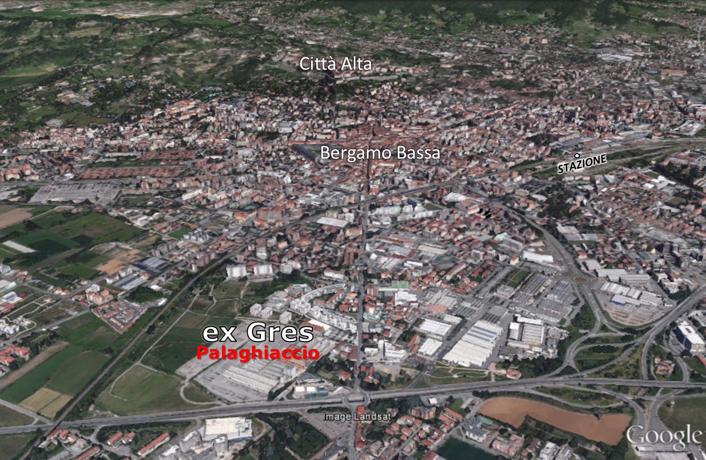
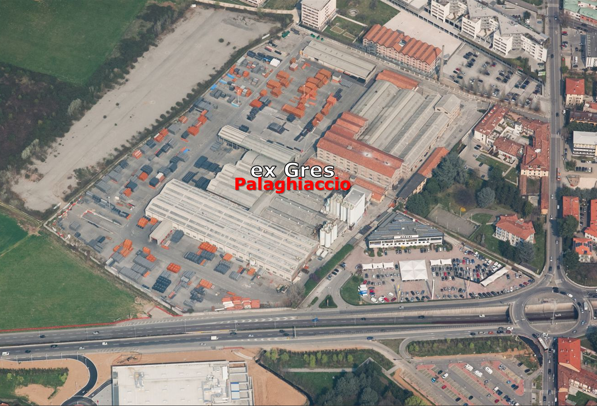
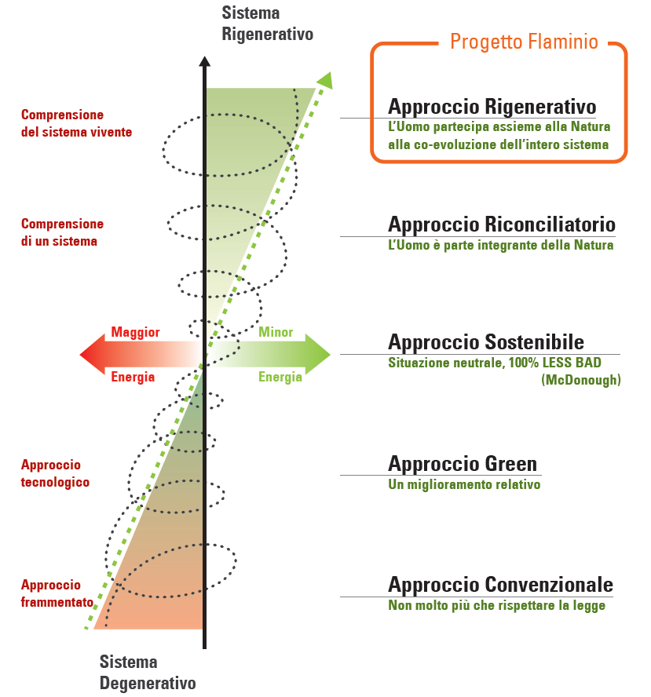
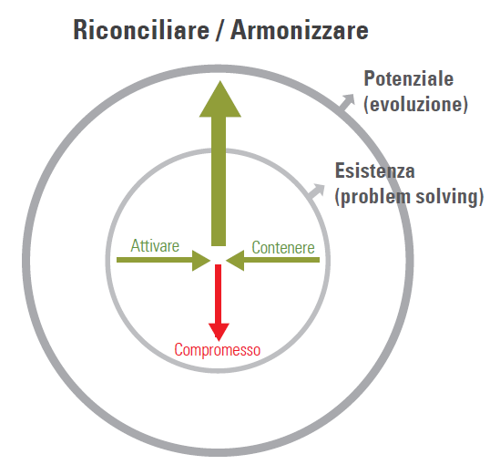

| LA VISION
PER IL CONCEPT GENERALE di Emanuela Casti |
|
| La vision che informa e permea l’analisi territoriale parte dal
presupposto che le periferie cittadine costituiscono le aree urbane
privilegiate per contrastare il consumo
di suolo, nel segno di un nuovo approccio integrato al territorio e alle sue valenze
ambientali, che si propone di utilizzare come risorsa gli edifici obsoleti e dismessi. Questo approccio, i cui elementi
fondanti sono già stati sviluppati dalla
ricerca RIFO, finanziata da Italcementi Group (www.rifoit.org), che ha
monitorato l’ERP obsoleto e le aree dismesse della Lombardia, può costituire la
base concettuale su cui pensare il nuovo Palaghiaccio (in corso di realizzazione nell’area dell’ex-Gres) non come
elemento isolato e puntuale, ma come nucleo in grado di innescare un processo di rigenerazione territoriale ampio che coinvolga un più
esteso ambito urbano. La visione fa riferimento a un filone recente di studi sulla
città (Soja, 2000 e 2005; Lévy, Lussault, 2003) che mostrano, da un lato, come
la città di medie dimensioni sia il laboratorio ideale per sperimentare nuove
strategie ambientali e, dall’altro, - ancor più importante - che l’equilibrio
funzionale urbano si basa su un modello reticolare dove la città è analizzata
nella sua dimensione quotidiana e dove periferia e centro sono due elementi su
cui agire in modo sinergico (Choay, 1994; De Certeau, 2001). Un modello di città
che, nel caso di Bergamo, ricalca alcuni elementi della sua strutturazione
storica. Tale sinergia, declinata in chiave ambientale - dove lo sport e la
natura costituiscono elementi su cui attuare una wellness - diventa l’occasione
per valorizzare alcuni caratteri storici peculiari di Bergamo, come i Corpi Santi, il reticolo idrografico - articolato in rogge, paleoalvei e
sistemazioni antropiche divenute habitat di rare specie vegetali - o i sentieri agricoli - ideali future greenway – le cui tracce materiali sono
ancora presenti ma ormai poco leggibili nella loro organicità. Tracce che
rendono le cosiddette
"periferie" contesti dotati di valori culturali e naturali
radicati nella loro poliedrica identità che l’espansione urbana ha inglobato e
trasformato ma non cancellato e sulle quali è possibile fondare un articolato
processo di rigenerazione urbana. |
|
|  Bergamo in rapporto all’area dell’ex-Gres |  L’area dismessa del Gres come polo di rigenerazione urbana |
| RIGENERAZIONE URBANA di Mario Cucinella Spunti raccolti dal lavoro di Bill Reed (Regeneris) Boston | |
|  | La
rigenerazione urbana è ad un punto di svolta. Tale processo è troppo
spesso considerato come una semplice ricerca del giusto mix di funzioni
che, nel sistema città, genera profitto. Il mercato italiano, già in
grande difficoltà, sta dimostrando che è necessario rivedere
l'approccio, pur sempre con una logica di profitti, dove il
processo invece che essere un ostacolo diventa un valore potenziale. Tre le aree di competenze: 1- L'applicazione di una metodologia di lavoro per una vera rigenerazione urbana, che non è una ristrutturazione urbana ma che coinvolge la comunità per armonizzare e conciliare i diversi interessi. Sociali, ecologici ed economici. 2- La progettazione paesaggista come infrastruttura verde e con una forte integrazione ecologica. 3- La progettazione per la realizzazione di edifici a zero energia per una nuova bellezza dell'architettura. Non è solo un problema prestazionale ma architettonico, di forma di relazione con gli altri elementi, ambientali, climatici ed estetici. È importante, e questa è una grande opportunità, definire il processo che porterà al successo dell'operazione. Per ottenere questo è necessario un nuovo approccio, un nuovo modo di pensare le trasformazioni urbane. Prima ancora di progettare gli edifici. Il punto più delicato è quello della gestione del conflitto dei diversi interessi che possono sfociare in un compromesso, che non è la vera soluzione del problema. Di solito si arriva a ciò e questo non soddisfa nessuna delle parti e non genera quel potenziale dell’area. L'obiettivo della rigenerazione urbana è quello di esplorare insieme ai diversi soggetti le potenzialità del programma dell'area, l'ambizione e l'equilibrio ecologico, la soddisfazione dei cittadini e la creazione di un miglioramento della vita oltre alla soddisfazione dello sviluppatore (SGR). |
Ma
il successo di un'operazione urbana non dovrebbe dipendere da tutti
questi fattori? Il successo economico dell'area potrebbe essere
potenzialmente anche più interessante di quanto oggi è previsto proprio perché
è attraverso l'armonizzazione degli interessi che ci sarà un
incremento di qualità della vita e conseguentemente un profitto
condiviso (non solo quello immobiliare). Il nostro lavoro parte da queste considerazioni metodologiche e di principi per affrontare l'obiettivo principale che sarà la trasformazione e il successo della rigenerazione urbana di quell'area. La rigenerazione non è un solo processo edilizio ma un processo sociale ed ecologico, dobbiamo capire profondamente l'essenza delle aspirazioni di un comune o istituzione, l'essenza degli obiettivi dello Sviluppatore (SGR) e l'essenza dell'ecosistema e quello della comunità. Il successo di quest'operazione non sarà solo dovuta dall'architettura, che è una risposta a queste domande, ma dalla capacità di armonizzare e riconciliare i tanti interessi, migliorare l'aspirazione economica, migliorare la vita dei cittadini, la loro felicità e benessere. La questione sul tavolo è come aiutare lo sviluppo urbano senza danneggiare, ma anzi migliorare, la vita delle persone che saranno inevitabilmente coinvolte. In questa fase non immaginiamo di dare risposte ma proporre un metodo di lavoro che indirizzi un processo di scoperta e definizione di questi potenziali. I punti sono questi: - Armonizzare e conciliare il conflitto piuttosto che trovare un compromesso. - Lavorare con il potenziale e non con l'esistente per anticipare e preparare il futuro dell'area. (un esempio: se guidiamo una macchina guardando lo specchietto retrovisore non saremo in grado di anticipare e prepararci per il futuro, che sta davanti a noi). Questo si può fare comprendendo l'essenza degli esseri viventi, dell'ecosistema, comprendendo il sistema socio-ecologico di Bergamo, della comunità e dello Sviluppatore (SGR). Questo ci permetterà di lavorare sulle aspirazioni fondamentali per indirizzare criticamente le questioni cruciali e significative ed affrontarle poi progettualmente con l'Architettura. Un quadro fondamentale del sistema vivente è conosciuto come la Legge del Tre:  | |
| È il
quadro fondamentale per aiutarci a tenere a mente che siamo in grado di
armonizzare l'attività umana con i sistemi naturali. È necessario
intensificare ed immaginare nuovi modi di essere nelle relazioni e
andare oltre i limiti di partecipazione e aspettative. Quando ci troviamo di fronte a punti di vista contrastanti per esempio: - Il profitto contro l'ambiente - Le attività umane contro la salute del sistema naturale. - La rigenerazione contro i cittadini La risposta frequente è quella di trovare un compromesso o di non decidere. Entrambe le parti hanno perso qualcosa rendendo ogni posizione insoddisfacente e creando attraverso questo metodo un danno crescente al pianeta e alla soluzione del problema nel tempo. L’alternativa è di conciliare, ascoltare armonizzare. È possibile, in realtà ed essenziale, che gli esseri umani armonizzino con la natura le loro attività armonizzando le questioni apparentemente contrastanti. La Vita può essere vista come un sistema di forze e di contrasti per esempio: uno Sviluppatore vuole costruire un edificio o realizzare un intervento urbano con conseguenze sulla salute del sistema sociale e naturale (incremento del traffico, dell'inquinamento o estraneità dell'intervento nel tessuto urbano) riducendo così la capacità di accettarlo dalla comunità. Lavorando con metodo e analizzando gli elementi fondamentali dell'intervento e della comunità possiamo trovare sinergie per identificare il potenziale o nuovi potenziali dell'area. Questo vuol dire analizzare e studiare il potenziale ecologico, economico e sociale dell'intervento. E questa attività avviene prima di cominciare la progettazione. È diventato essenziale muoverci oltre il principio della sostenibilità solo relativa agli edifici per entrare finalmente nella dimensione sociale cioè che questi interventi urbani riescano a creare una vita sostenibile delle persone. Il successo commerciale dell'operazione è fondamentale per l'impatto sociale che avrà nella comunità, ma questo successo deve essere condiviso e studiato con tutti gli attori. Il successo dell'operazione non dipenderà solo dal risultato economico ma dalla capacità di quella parte di città di vivere insieme a quell'operazione. Questo non vuol dire un lungo e pericoloso percorso partecipativo, che in Italia è quasi sempre orientato a costruire consenso e non ad armonizzare gli interessi delle parti, ma che diventi un vero processo e metodo di lavoro per progettare un pezzo di città. Più il sistema è in grado di ri-generarsi, e questo avviene solo attraverso il coinvolgimento delle persone della comunità, più l'operazione sarà attrattiva e profittevole per lo Sviluppatore. Quindi questo gruppo propone un processo che parta da un analisi del potenziale delle aree, le connessioni, i nuovi bisogni e le aspirazioni di una cittadinanza, analizzando i desideri dello sviluppatore e analizzando le conseguenze anche per trovare e migliorare il programma dell'intervento. Crediamo di trovarci di fronte ad una svolta importante sul tema della rigenerazione urbana. Intesa troppo spesso come una semplice ricerca di funzione che generino solo profitto all'interno della città. Il mercato italiano già in grande difficoltà a dimostrato che è necessario rivedere questo metodo andando oltre la semplice vecchia ricetta del solo profitto per entrare in una logica pur sempre di profitti ma dove il processo invece che essere un ostacolo diventi un potenziale. Non mancano gli esempi d'insuccesso dovuti ad una incapacità di gestire il rapporto con la cittadinanza o le difficolta di portare avanti dei contenuti sociali d'interesse pubblico come chiedono molto spesso le amministrazioni e i cittadini. È necessario esplorare le nuove domande sull'abitare, i nuovi meccanismi del commercio, una condivisione dei desideri dello spazio pubblico, nuove funzioni culturali e ambientali. Rigenerare quel pezzo di città è un'opportunità per quel quartiere, per la città, per aprire finalmente una nuova stagione di sostenibilità e rigenerazione sociale. La città è un ecosistema dove la crescita e il benessere l'equilibro sociale dipende tutto da fattori intrinsechi alle relazioni umane. Abbiamo bisogno di migliorare la vita dei cittadini, abbiamo bisogno di ritrovare un rapporto giusto e dialettico con la natura abbiamo bisogno di credere nelle persone e dargli una città migliore. | |